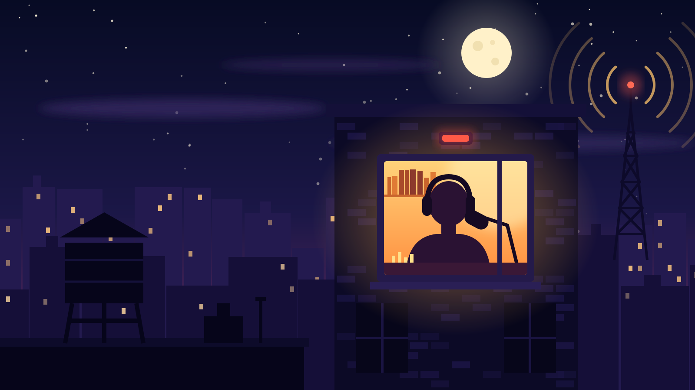

Fictional example
Still up? So are we.
Late Window Radio: slow records and quiet talk from a one-room studio, every night from eleven until the first trains.
Hear last night
The video is not loaded yet.
Details
Late Window Radio is a made-up brand for this example. It shows the cover layout: the picture fills the hero, the words sit on top of it, and focus keeps the lit window in view on a narrow screen.
What this page has fetched
0 B
of video so far. The page has not asked for it. Press Play on the picture and watch this number.
39 kB
is everything this hero needs before Play: its words, styles and script (13 kB) and the poster (26 kB).
581 kB
is the whole 10-second clip as WebM (1.41 MB as MP4, for browsers that need it). It is drawn with code, starts on the poster and ends on it.
The same hero built the usual way starts by itself and fetches the video whether you wanted it or not. See the autoplay version and its meter.
What the hero does without being asked
- Words first. The headline, the text and the button are plain HTML. They work when the video is slow, blocked or missing.
- Nothing moves until you press Play. No autoplay, and the video file is not requested before the press.
- It stops by itself. Scroll it out of view or switch tabs and it pauses. It never starts again by itself.
- It listens to reduced motion. When your system asks for less motion, the page says so and stays still until you choose.
- It fails softly. A missing poster becomes its description, and a missing video becomes a short message. The page stays usable.
- It tells screen readers what happens. Loading, playing, paused and finished are each announced, in English or Spanish.
Three looks from three small files
Each of these pages is one JSON file with words, a poster and a video. The layout, the colours and the part of the picture to keep in view are fields in that file.
Make yours
git clone https://github.com/augustobuilds/hero-in-motion.git cd hero-in-motion python3 scripts/build_hero.py examples/radio.json --output output/hero.html
It needs Python 3.9 or newer and nothing else. Change the words, the poster and the video in the JSON file, or add --fragment to get just the hero block for a page you already have. No video yet? The kit can turn an SVG poster into a 10-second clip. Read the guide on GitHub.